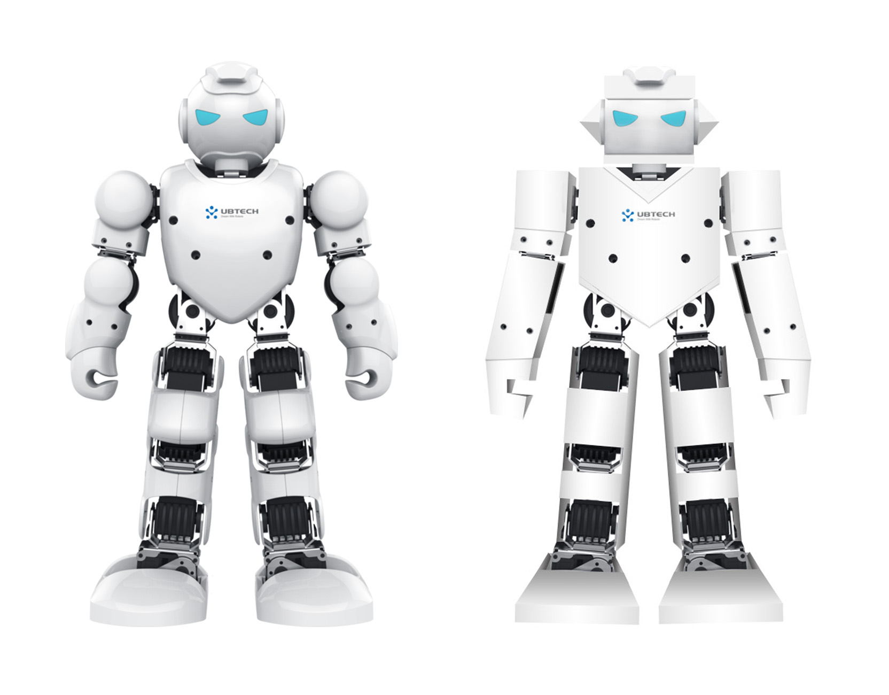
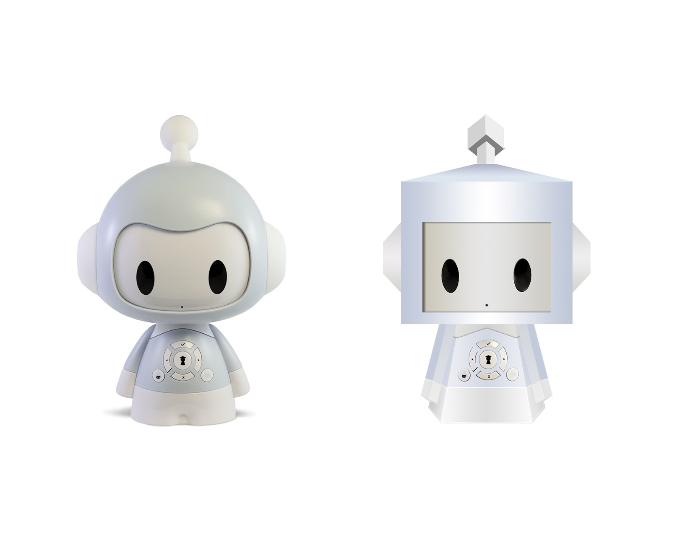

Robots' appearance and interface design strongly influence users' acceptance and functional expectation.
Bouba/kiki effect is a non-arbitrary mapping between speech sounds and the visual shape of objects.
Based on the theory, I recreate several launched robots with sharp figures to explore whether the effect exists on Human-Robot interface design.
Research topic
The bouba/kiki effect is a non-arbitrary mapping between speech sounds and the visual shape of objects.
Bouba becomes Kiki

